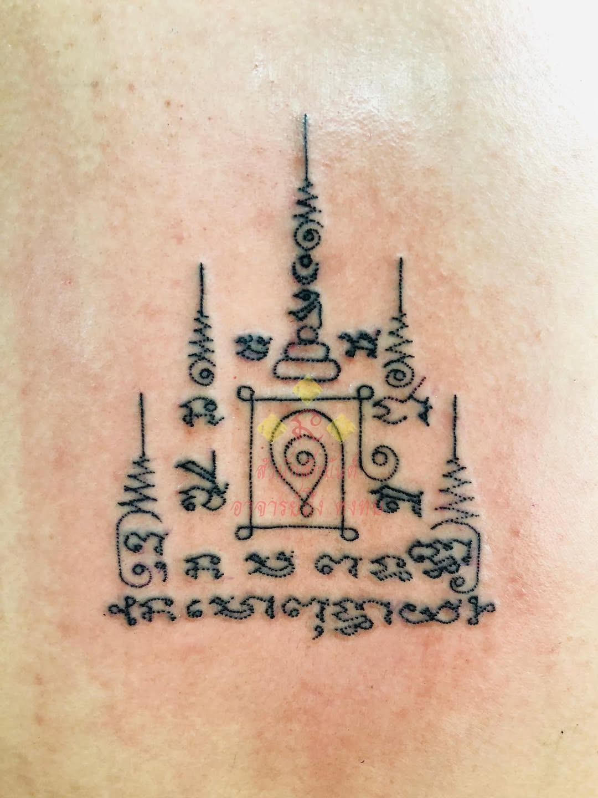
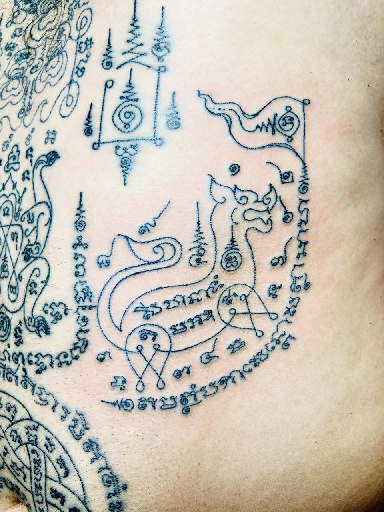
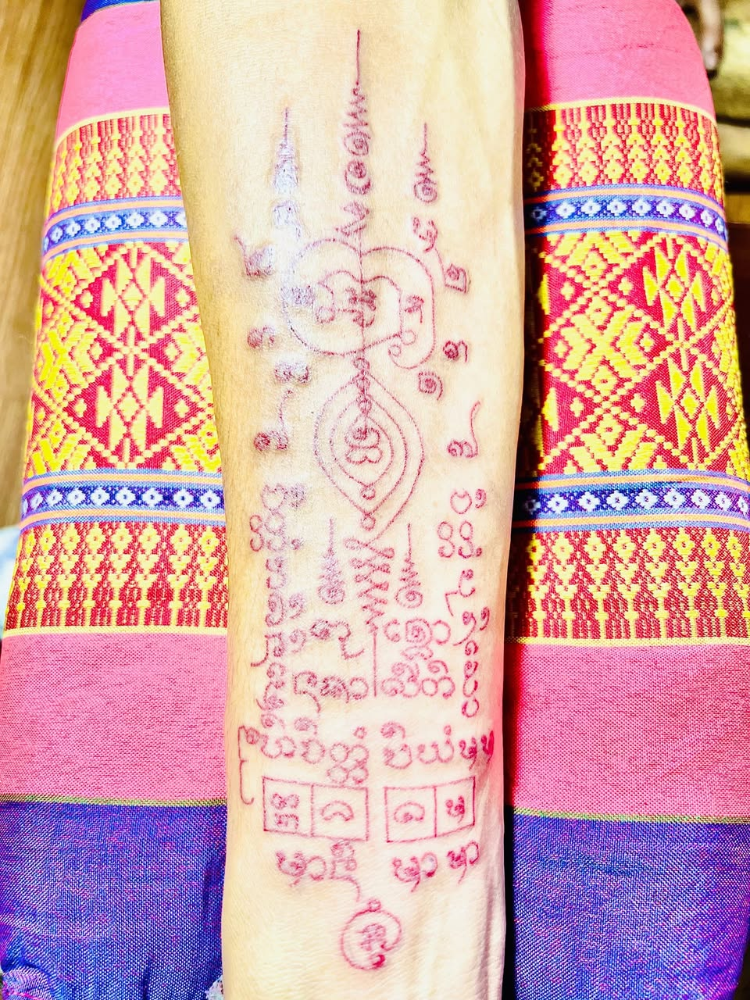
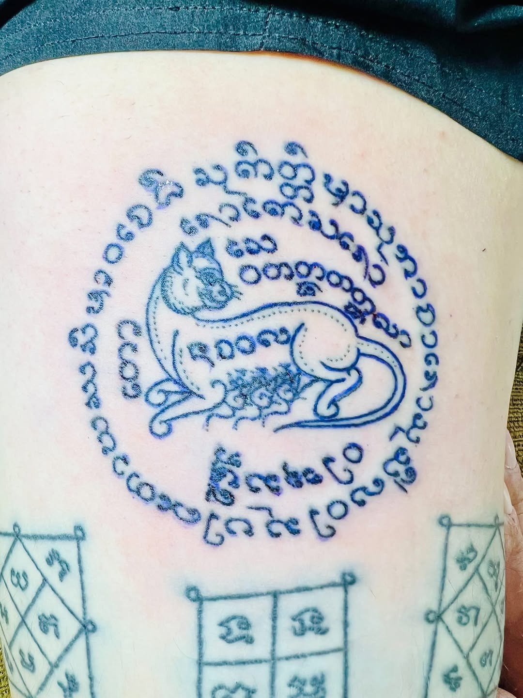
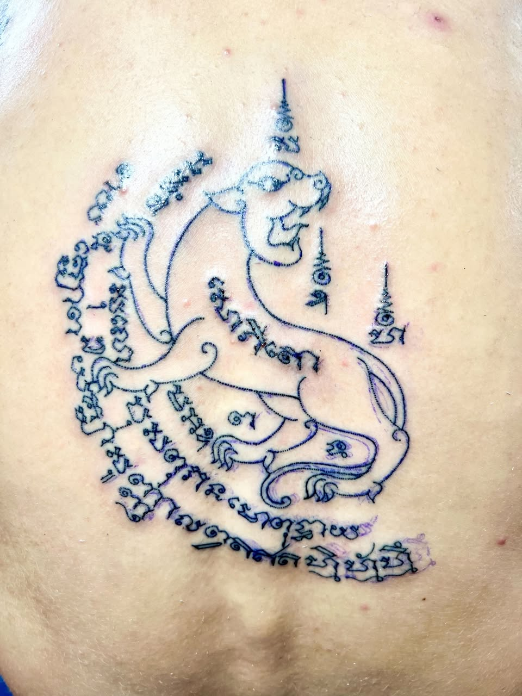
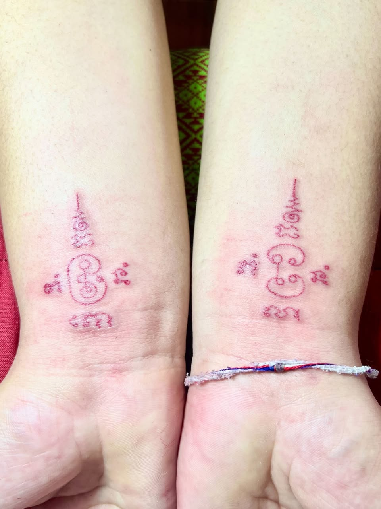
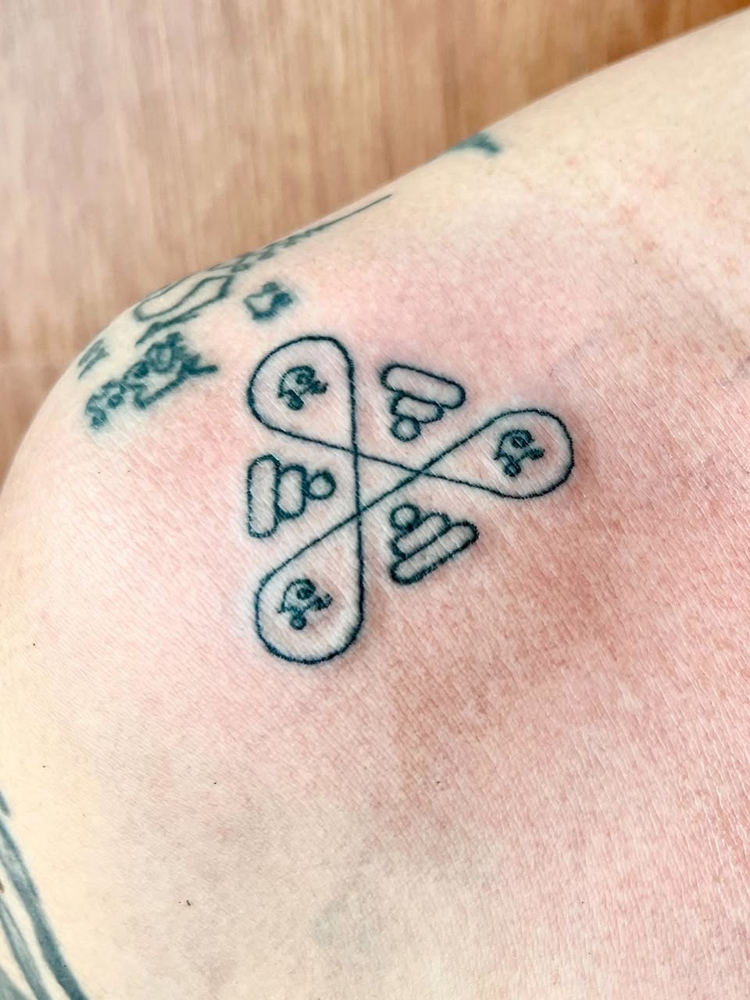
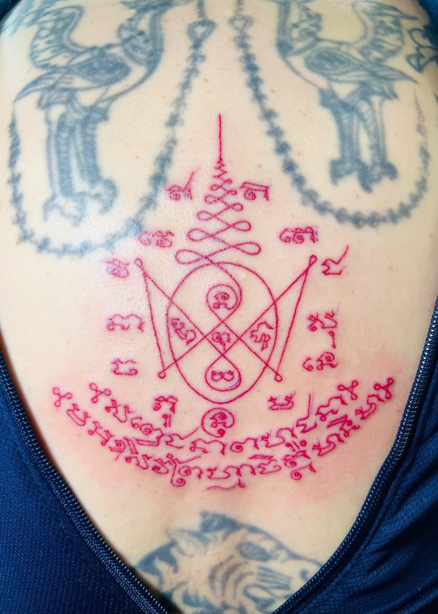

Sak Yant tattoos are traditional blessings inscribed into the skin by Ajarns (sacred tattoo masters), inside a samnak (a master's sanctuary).
These are magic spells cast into skin.
The overwhelming majority of Ajarn Thueng's disciples are Thai. From time to time, he has also worked with disciples from elsewhere: the United States, Canada, France, and Taiwan among them. A translator is provided, highly fluent in English, so nothing is lost or mixed up in the process.
Say what you're looking for, when you'll be in Bangkok, or ask anything you'd like to know first.
Ajarn Thueng was ordained as a monk and studied for years under Luang Por Prathueang Atikkanto of Wat Nong Yang Thoi in Phetchabun, a monk renowned for his invulnerability magic and his tattooing. After his teacher's death, he went on to study under several more monks and lay masters, learning specific protective, love, and fortune designs from each.
The knowledge also runs in his family. His great-grandfather studied under masters active during the Second World War era. That knowledge passed down to Ajarn Thueng's grandfather, a folk healer, who later passed it to Ajarn Thueng himself.
He tattoos by hand, using the traditional split-mouth needle rather than a machine, in designs closer to what the tradition looked like generations ago than to what's common now.

A sample of Sak Yant designs Ajarn Thueng has tattooed, each rooted in a specific tradition and lineage.















Believers since ancient times have held that these tattoos bring protection from accidents, weapons, and harm; invulnerability; escape from danger; victory over rivals and competitors; love and attraction; favor with superiors and people in power; and success in business and trade, among others.

Alongside tattooing, Ajarn Thueng performs khrop sian, a head-covering blessing meant to bring luck and protection to those who receive it. He also offers sak nam man, tattoos done in oil rather than ink. They leave no visible mark, done purely for the belief behind them rather than for how they look.


Like many Thai tattoo masters, Ajarn Thueng also makes and consecrates amulets, in the same tradition as his tattoo work. His years of skill as an artist and as a practitioner of the tradition carry into this side of what he does as well.


Say what you're looking for, when you'll be in Bangkok, or ask anything you'd like to know first.